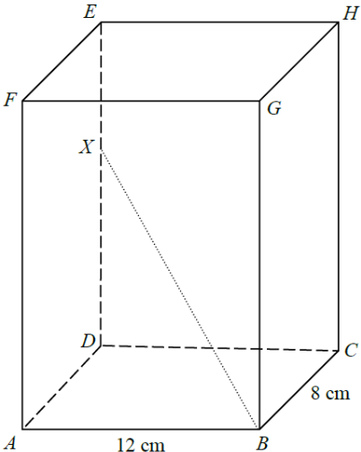

QQuestion
In the figure, \(ABCDEFGH\) is a rectangular block. Let \(X\) be a point lying on \(DE\) such that \(DX = 9\text{ cm}\) and \(EX = 4\text{ cm}\). Denote the angle between \(BX\) and the plane \(ABGF\) by \(\theta\). Find \(\cos\theta\).
Given on the figure: \(AB = 12\text{ cm}\), \(BC = 8\text{ cm}\), \(DE = 13\text{ cm}\) (so \(DX + EX = 13\)).
Original Figure

1Part (a) — Locate the foot of perpendicular \(Y\)
To measure the angle between the line \(BX\) and the plane \(ABGF\), the standard method is:
\[ \text{angle between } BX \text{ and plane } ABGF \;=\; \angle XBY \]
where \(Y\) is the foot of the perpendicular from \(X\) to the plane \(ABGF\).
Since \(ABCDEFGH\) is a rectangular block and \(X\) lies on \(DE\) which is perpendicular to the plane \(ABGF\) (because \(DE /\!/ AF\) and \(AF \perp\) plane \(ABGF\))...
\[\text{The foot of the perpendicular from } X \text{ to plane } ABGF \text{ is } Y.\]
Note that \(ADXY\) is a rectangle, so \(AY = DX\) and \(XY = AD\).
So the required angle is
\[\theta = \angle XBY.\]
2Part (b) — Compute \(BY\) and \(BX\)
Now we only need the lengths \(BY\) and \(BX\) inside the right triangle \(XBY\).
Since \(ADXY\) is a rectangle, \(AY = DX = 9\text{ cm}\) and \(XY = AD = BC = 8\text{ cm}\).
In the right-angled triangle \(ABY\) (right angle at \(A\)):
\[BY = \sqrt{AB^2 + AY^2} = \sqrt{12^2 + 9^2} = \sqrt{225} = 15\text{ cm}.\]
In the right-angled triangle \(BXY\) (right angle at \(Y\)):
\[BX = \sqrt{BY^2 + XY^2} = \sqrt{15^2 + 8^2} = \sqrt{225 + 64} = \sqrt{289} = 17\text{ cm}.\]
3Part (c) — Evaluate \(\cos\theta\)
Finally combine the two lengths to get the cosine.
In right triangle \(XBY\):
\[\cos\theta = \cos\angle XBY = \frac{\text{adjacent}}{\text{hypotenuse}} = \frac{BY}{BX} = \frac{15}{17}.\]
Summary of Key Results
- \(Y\) = foot of perpendicular from \(X\) to plane \(ABGF\).
- The angle between \(BX\) and plane \(ABGF\) is \(\theta = \angle XBY\).
- \(ADXY\) is a rectangle \(\Rightarrow AY = DX = 9\text{ cm}\), \(XY = AD = 8\text{ cm}\).
- \(BY = \sqrt{AB^2+AY^2} = \sqrt{12^2+9^2} = 15\text{ cm}\).
- \(BX = \sqrt{BY^2+XY^2} = \sqrt{15^2+8^2} = 17\text{ cm}\).
- \(\cos\theta = \dfrac{BY}{BX} = \dfrac{15}{17}\).